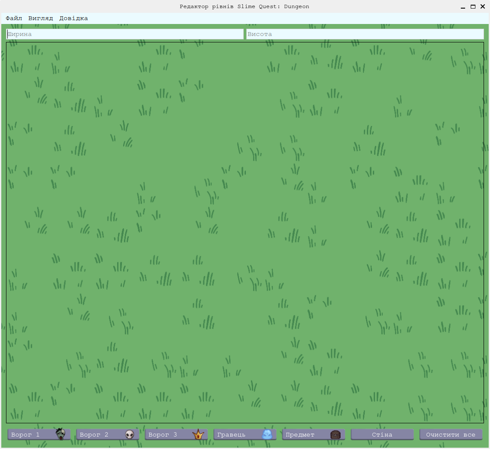
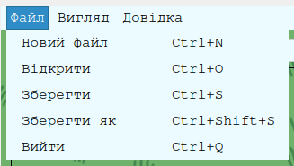
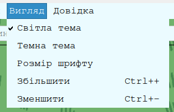
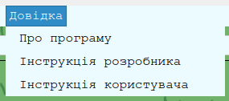
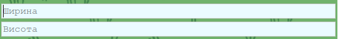
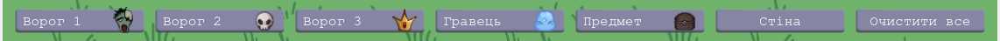

Вступ
Це користувацька інструкція, тут наведений опис наявного функціоналу в програмі та дії по вирішенню проблем які можуть виникнути під час користування системою.
Опис графічного інтерфейсу
На головній сторінці зверху ви бачите головне меню, яке має 3 основні вкладки.
Перша вкладка "Файли" містить кнопки для створення, відкриття, збереження та закриття файлів. Ви можете створити новий файл, відкрити існуючий або зберегти поточний файл. Гарячі клавіші(скорочення) написані з правого боку кожної кнопки.
Друга вкладка "Вигляд" налаштовує зовнішній вигляд програми, а саме темна чи світла тема, розмір шрифту та карти.
Третя вкладка "Довідка" містить інформацію про програму, її версію та авторів. Тут ви можете знайти інструкцію розробника та користувача.
Під головним меню розташовано два поля для вводу. В перше ви вводите ширину карти, яку хочете створити, а в друге - висоту. Щоб карта створилась після введення даних натисніть Enter.
У нижній частині інтерфейсу розташована панель інструментів, яка дозволяє вибрати об'єкти для розміщення на карті. Ви можете вибрати зомбі, скелета, боса рівня, гравця, скриню або стіну. Виділіть область на якій ви хочете розмістити об'єкт, а потім натисніть на відповідну кнопку знизу або відкрийте контекстне меню ПКМ(права кнопка миші) і оберіть об'єкт щоб розмістити його там.
Скорочення
- Ctrl + A - виділити всю карту
- Ctrl + C - скопіювати виділену область
- Ctrl + V - вставити скопійовану область
- Ctrl + X - вирізати виділену область
- Ctrl + N - створити новий файл
- Ctrl + O - відкрити існуючий файл
- Ctrl + S - зберегти поточний файл
- Ctrl + Shift + S - закрити поточний файл
- Ctrl + Q - вийти з програми
- Ctrl + + / Ctrl + колесо миші вгору - збільшити карту
- Ctrl + - / Ctrl + колесо миші вниз - зменшити карту
- 1 - поставити зомбі на виділену область
- 2 - поставити скелета на виділену область
- 3 - поставити боса рівня на виділену область
- 4 - поставити гравця на виділену область
- 5 - поставити скриню на виділену область
- 6 - поставити стіну на виділену область
- Backspace - очистити виділену область
Логіка об'єктів
Зомбі, скелет та бос є ворогами, які будуть атакувати гравця. Гравець - персонаж за якого буде грати користувач гри. Скриня - об'єкт з якого гравець зможе отримати різні предмети, які допоможуть йому в розвитку. Стіна - цільний блок через який не може проходити ні гравець, ні вороги.
Вирішення проблем
Якщо ви зіткнулися з проблемами під час використання програми, спробуйте наступні кроки:
- Переконайтеся, що у вас встановлена остання версія Python та всі необхідні бібліотеки.
- Якщо програма не запускається, перевірте консоль на наявність помилок та повідомлень.
- Якщо ви не можете відкрити файл, переконайтеся, що він існує та має правильний формат.
- Якщо програма зависає або працює повільно, спробуйте перезапустити її або очистити кеш.